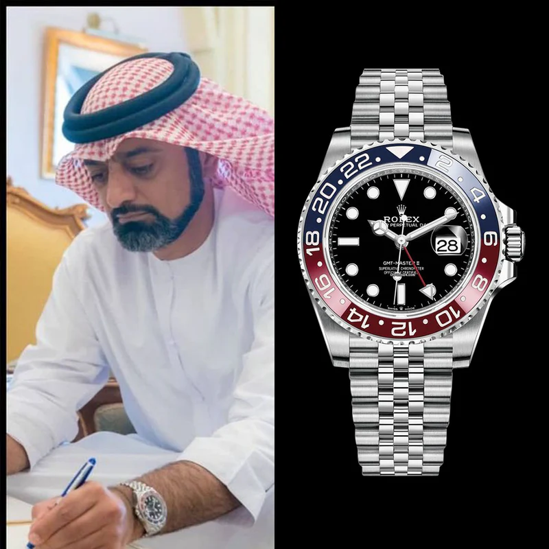

Home · The Collection · Rolex

Rolex · 1675 'Pepsi' GMT-Master
Rolex GMT-Master 'Pepsi' 1675
RR · Very Rare
| Movement | Automatic, Caliber 1575 |
| Case | 18K Yellow Gold |
| Dial | Black |
| Case size | 40mm |
| Power reserve | 44 hours |
| Complications | GMT, Rotating bezel, Date |
| Year | 1969 |
| Valuation | US$ 40,000 |
The Rolex GMT-Master 'Pepsi' reference 1675 in yellow gold is one of the most collectible vintage GMT watches. Introduced to help Pan Am pilots track multiple time zones simultaneously, the red and blue 'Pepsi' bezel became one of the most iconic watch designs in history. The yellow gold version is exceptionally rare.